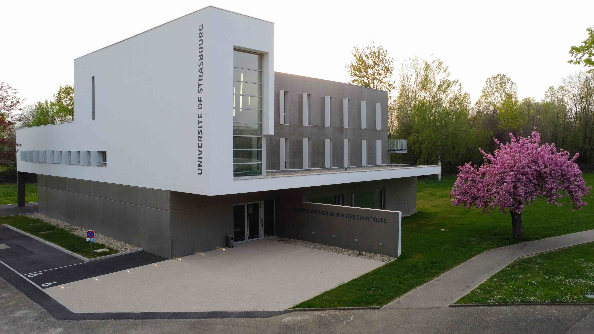
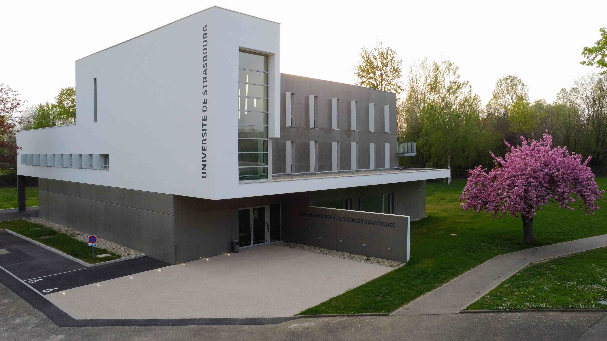

|
Johannes Schachenmayer
I'm a theoretical quantum physicist (CNRS scientist, CRCN)
researching and teaching at the Université de Strasbourg
in France. I work at the Centre Européen de Sciences Quantiques (CESQ) as part of the Institut de Science et
d'Ingénierie Supramoléculaires (ISIS)
in the quantum matter theory team (qmtheory.fr).
|
|
|
|
Latest bits of news
-
10/09/2021 - Very grateful to have received a "Prix espoirs de l'Université de Strasbourg"
(link).
Trajectory
-
Habilitation (2019): Habilitation à diriger des recherches (HDR), Université de Strasbourg.
-
CNRS (2016): Tenured researcher position in Strasbourg.
-
Post-doc (2013-2016): JILA, Boulder, CO, US (group of A. M. Rey).
-
Visiting student/post-doc (2011-2013): University of Pittsburgh, PA, US (group of A. J. Daley).
-
Doctoral degree (2012): Dr. rer. nat, Universität Innsbruck, Austria.
-
Master degree (2008): Dipl.-Phys., Technische Universität München (TUM), Germany.
Strasbourg

 

|
|
|